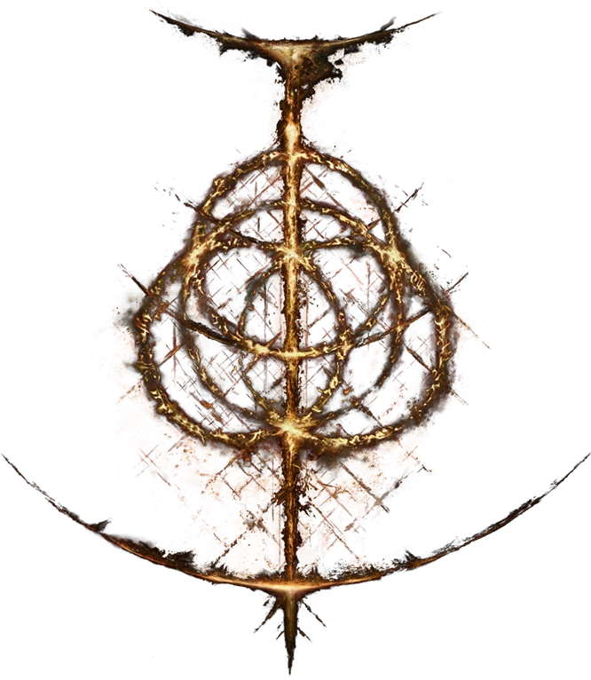
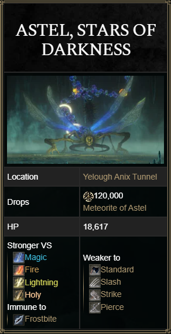

ASTEL, STARS OF DARKNESS

Astel, Stars of Darkness is a Field Boss in Elden Ring. This giant insectoid creature is found in Yelough Anix Tunnel in the Consecrated Snowfield .
This is an optional boss, as players don't need to defeat it in order to advance in Elden Ring. Astel, Naturalborn of the Void is the weaker variant of this boss.

ASTEL, STARS OF DARKNESS COMBAT INFORMATION- • Health: 18,617 HP
- • Defense: 120
- • Stance: 120
- • Parryable: No
- • Is vulnerable to a critical hit after being stance broken
- • Gravity type enemy
- • Weak Spot: Head
- • Damage: Standard, Magic
- • Drops 120,000 Runes, Meteorite of Astel
